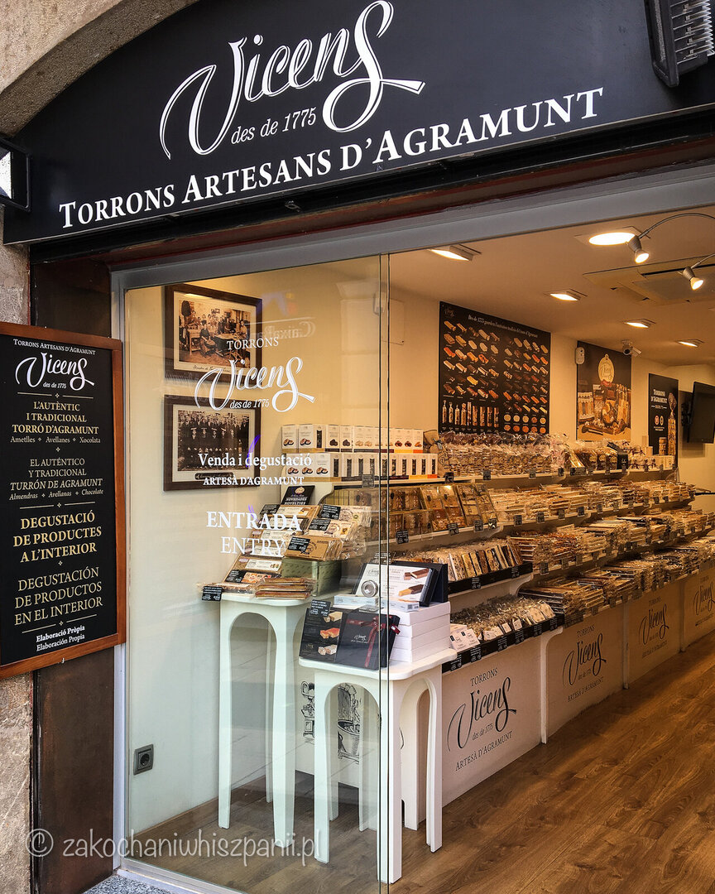

Turrón
Za każdym razem będąc w Hiszpanii, przywozimy ze sobą produkty kulinarne. Te zapachy i smaki sprawiają, że powrót do codzienności w Polsce jest nieco łagodniejszy. Dziś przybliżymy Wam informacje o smacznym nugacie, który nazywa się Turrón.

W Hiszpanii jest najczęściej kupowany w okresie świątecznym. Jest również jednym z naszych ulubionych hiszpańskich słodyczy. Dla tych, którzy nigdy nie mieli okazji go spróbować, bądź nie mieli pojęcia o jego istnieniu, kształtem przypomina czekoladę w pudełeczku. W składzie tego nugatu znajdziemy, migdały, cukier, miód, jajka. Występuje w wersji kruchej Turrón de Alicante i miękkiej Turrón de Jijona. Mi najbardziej odpowiada Turrón o miękkiej konsystencji, ponieważ boję się, że jak będę jeść twardą wersję Turróna, to zęby mi się połamią :).

Do wyboru jest cały wachlarz smaków, m.in. czekoladowy, kokosowy, pomarańczowy i marcepanowy. Ciekawostką jest fakt, że w miejscowości Jijona (Xixona), ok. 30 km od Alicante, znajduje się Museo de Turrón. W muzeum znajdują się informacje dotyczące produktów oraz sposobu, w jaki jest wytwarzany Turrón, dodatkowo można poznać historię muzeum oraz firmy, w której produkowane są nugaty.
Turrón jest dostępny również w Polsce np. w sklepach Lidl, w trakcie tygodnia hiszpańskiego, w Krakowie możemy go dostać stacjonarnie w sklepie Ibernia lub online z opcją wysyłki.